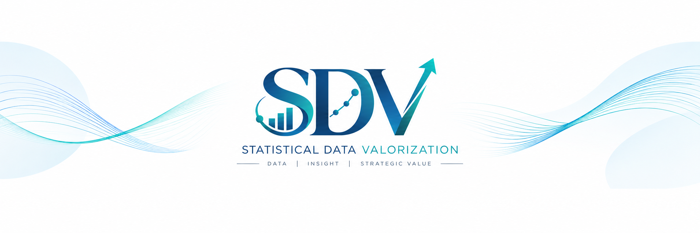

SDV 이야기 제3편 — 데이터는 언제 가치가 되는가
데이터 분석을 넘어 의사결정과 가치 창출로 나아가는 통계 이야기
한 정책에 대한 찬성률이 60%라는 여론조사 결과가 발표되었다고 가정해 보자. 표본설계와 추정은 적절했고, 결과표와 보고서도 완성되었다. 그렇다면 이 데이터는 충분한 가치를 만들어낸 것일까.
이 결과는 국민의 의견을 파악하는 데 유용한 정보다. 그러나 정책의 어떤 부분에 동의하는지, 어떤 조건에서 찬성하는지, 무엇을 우려하는지까지 알려주지는 않는다. 정책 담당자가 구체적인 시행 방안을 검토하거나 시민이 정책의 쟁점을 이해하려면 추가적인 근거가 필요할 수 있다.
데이터의 가치는 자료를 확보하거나 분석을 완료했다는 사실만으로 보장되지 않는다. 그 자료로 무엇을 알게 되었고, 그 앎이 어떤 이해와 판단에 기여했는지 살펴야 한다.
지난 글에서 나는 통계학의 역할을 요약·추론·학습·융합·가치화라는 다섯 단계로 설명했다. 이번에는 하나의 데이터가 실제 가치로 이어지는 과정을 살펴보려 한다. 통계학의 역할 확장이라는 큰 흐름을 구체적인 작업 안으로 가져오는 것이다.
원자료 → 품질과 구조
출발점은 데이터를 확보하는 일과 사용할 수 있는 근거를 확보하는 일이 다르다는 데 있다.
여론조사의 원자료에는 사람마다 선택한 응답과 여러 배경 정보가 기록되어 있다. 그러나 숫자가 채워진 파일을 받았다고 해서 곧바로 해석을 시작할 수 있는 것은 아니다.
- 질문은 무엇을 측정했는가.
- 조사 대상과 응답자는 어떻게 선정되었는가.
- 무응답은 어떻게 처리되었는가.
- '모르겠다'는 응답이 반대나 결측으로 잘못 분류되지는 않았는가.
- 적용한 가중치는 어떤 모집단과 보정 기준을 전제로 하는가.
이러한 확인을 거쳐 자료의 품질을 검토하고 분석할 구조를 갖추어야 한다. 품질은 단순히 오류가 없는 상태만을 뜻하지 않는다. 답하려는 질문에 필요한 내용이 적절하게 측정되어 있어야 한다.
찬반만 조사했다면 찬반의 이유를 직접 확인할 수 없다. 분석기법을 추가한다고 측정하지 않은 이유가 생기지는 않는다. 이때 필요한 판단은 현재 자료로 답할 수 있는 범위를 정하고, 필요한 추가 자료를 구체화하는 것이다.
분석 → 정보
그다음에는 자료를 정보로 바꾸는 분석이 이루어진다.
응답을 요약하고, 표본설계와 가중치를 고려해 모집단의 찬성률을 추정하며, 불확실성을 평가한다. 적절한 조건 아래 집단별 차이를 비교할 수도 있다. 여기서 얻는 정보는 흩어진 응답을 일정한 질문에 맞춰 정리한 결과다.
하지만 전체 찬성률 60%와 몇 개의 교차표만으로 활용 목적에 충분히 답했는지는 다시 물어야 한다. 정책 담당자가 알고 싶은 것이 구체적인 시행 조건에 대한 수용성이라면, 전체 찬성률은 출발점이 될 수 있지만 그것만으로 검토가 끝나지는 않는다.
정보 → 인사이트
이 지점에서 정보는 인사이트로 이어질 수 있다.
가령 조사에서 정책의 목표에 대한 동의, 비용 부담에 대한 의견, 시행 방식에 대한 우려를 각각 측정했다고 하자. 분석 결과, 정책의 목표에는 동의하면서도 특정한 비용 부담 방식에는 반대하는 응답이 상당수 확인될 수 있다.
이는 가상의 결과지만, 무엇이 달라지는지는 분명하다. 전체 찬성률만으로는 보이지 않던 '목표에 대한 동의와 시행 조건에 대한 수용성의 차이'가 드러난다. 정책을 평가할 때 두 가지를 구분해야 한다는 해석이 가능해지는 것이다.
나는 이러한 의미 발견을 인사이트라고 부르고자 한다. 다만 여기서 사용하는 데이터·정보·인사이트·지식의 구분은 SDV의 작업 과정을 설명하기 위한 구분이다. 실제 작업에서는 서로 겹치고 오가기도 한다.
인사이트 → 지식
인사이트를 얻었다면, 다음에는 그 해석을 얼마나 믿을 수 있는지 확인해야 한다.
몇 개의 응답에서 우연히 나타난 특징인지, 질문의 표현이나 순서에 영향을 받은 결과인지, 분석 방법을 달리해도 유지되는지 검토해야 한다. 비용에 대한 우려와 정책 반대가 함께 나타났다는 사실만으로, 비용 부담을 바꾸면 찬성률이 얼마나 높아질지 단정할 수도 없다.
추가 조사나 반복 관측, 적절한 비교와 검증을 통해 적용 범위와 한계를 파악할수록 그 해석은 활용 가능한 지식으로 축적된다. 모든 상황에 적용되는 확정적인 진리를 얻었다는 뜻은 아니다. 어떤 조건에서 무엇을 말할 수 있는지 설명할 수 있게 되었다는 뜻이다.
이 과정에서 통계학자는 결론을 강하게 표현하는 것보다 근거의 강도에 맞게 표현하는 데 기여한다. 분석 결과와 가능한 해석, 아직 검증하지 못한 가설을 구분하는 일이다.
지식 → 판단과 행동
이제 그 지식이 판단에 어떻게 사용되는지 살펴볼 차례다.
정책의 목표에는 동의하면서 시행 조건을 우려하는 의견이 확인되었다면, 담당자는 목표와 시행 방식을 나누어 검토할 수 있다. 시민에게 제공하는 설명도 그 구분을 반영할 수 있다. 추가적인 의견 수렴이 필요한 쟁점을 정하거나, 현재 근거만으로는 결정을 내리기 어렵다고 판단할 수도 있다.
어떤 방안을 채택할지는 비용과 제도, 공정성 등 다른 조건을 함께 고려해야 한다. 통계학자는 분야 전문가와 결정권자가 그 판단을 할 수 있도록 근거와 불확실성을 제공한다.
전체 흐름, 그리고 되돌아가는 연결
분석에서 활용까지의 연결을 정리하면 다음과 같다.
| 과정 | 다음 단계로 넘어가기 전에 확인할 질문 |
|---|---|
| 원자료 → 품질과 구조 | 무엇을 측정했으며, 답하려는 질문에 적합한가? |
| 분석 → 정보 | 무엇을 추정했고, 그 결과는 얼마나 불확실한가? |
| 정보 → 인사이트 | 결과에서 어떤 의미를 발견했으며, 다른 해석은 가능한가? |
| 인사이트 → 지식 | 해석을 뒷받침하는 근거와 적용 범위는 무엇인가? |
| 지식 → 판단과 행동 | 누가 어떤 검토나 선택에 사용할 수 있는가? |
| 활용 → 가치 확인 | 실제 이해와 판단에 어떤 도움이 되었는가? |
이 연결은 한 방향으로만 진행되지 않는다. 활용하려는 순간 자료의 부족을 발견할 수 있고, 검증 과정에서 처음의 해석을 수정할 수도 있다. SDV에서는 이러한 되돌아감도 중요한 작업이다. 근거가 부족하다는 판단은 추가 조사와 분석의 방향을 정해 준다.
활용 → 가치 확인
마지막으로 남는 질문은 가치가 실제로 만들어졌는가이다.
보고서를 전달했다거나 회의에서 인용되었다는 사실은 사용의 흔적이다. 그러나 사용되었다는 것과 도움이 되었다는 것은 구분해서 확인해야 한다.
- 전체 찬성률만으로 시행 방안까지 지지받는다고 오해할 가능성을 줄였는가.
- 빠져 있던 쟁점이 검토에 포함되었는가.
- 추가 조사에서 확인할 질문이 명확해졌는가.
- 결정의 근거와 한계를 설명하기 쉬워졌는가.
이런 변화가 확인된다면 데이터는 활용 가치를 만들어낸 것이다. 가치는 반드시 찬성률을 높이거나 결정을 빠르게 내리는 데 있지 않다. 시민의 우려를 더 정확하게 이해하고, 성급한 결정을 유보하고, 판단의 불확실성을 줄이는 것도 가치다.
물론 이후의 결과가 좋아졌다고 해서 그 공로를 분석에 모두 돌릴 수는 없다. 여러 요인이 함께 작용하기 때문이다. 데이터 분석의 기여도 가능한 근거의 범위 안에서 설명해야 한다.
내가 SDV에서 강조하고 싶은 것은 이 연결을 처음부터 의식하며 작업하자는 것이다. 누구에게 어떤 근거가 필요한지 정하고, 자료와 해석의 타당성을 검토하며, 활용 결과를 다시 확인하는 과정이다. 활용이 막힌 지점을 발견했다면 다음 조사와 분석에 반영해야 한다.
AI도 자료 점검과 분석, 해석과 대안 검토에 참여할 수 있다. 그럴수록 내가 붙잡고 싶은 질문은 어떤 도구로 결과를 만들었는가보다, 그 결과가 필요한 근거를 갖추었으며 실제로 무엇에 도움이 되었는가이다.
"데이터는 검증과 해석을 거쳐 믿을 수 있는 근거가 되고,
그 근거가 이해와 판단을 개선할 때 활용 가치가 구체화된다."
SDV는 그 과정을 끝까지 연결하려는 나의 제안이다.
